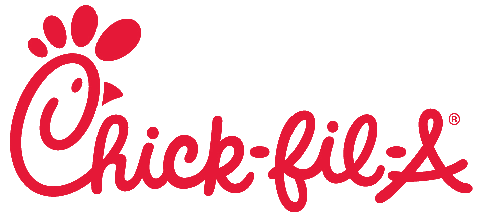

Was an intern for the College of Liberal Arts and Human Sciences at Virginia Tech for Fall 2018. Responsibilities included updating the website, creating content for Instagram, and editing faculty bios.

Since 2012, I have worked for my local Chick-fil-A. I work there now as a Supervisor, who leads shifts and deals with daily processses. My responsibilities include running shifts of over 20 people, coordinating catering orders, and communicating tasks and plans with the rest of the staff.